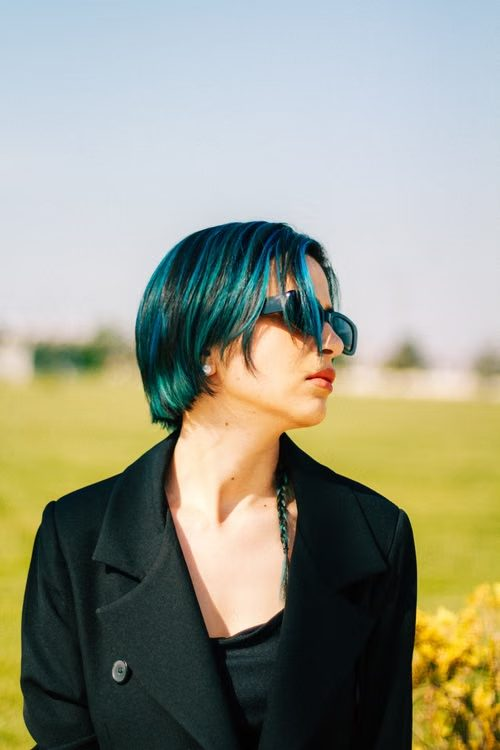
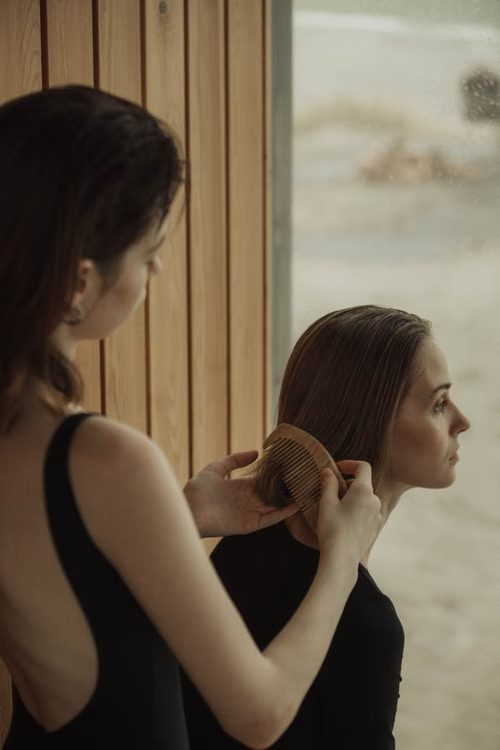
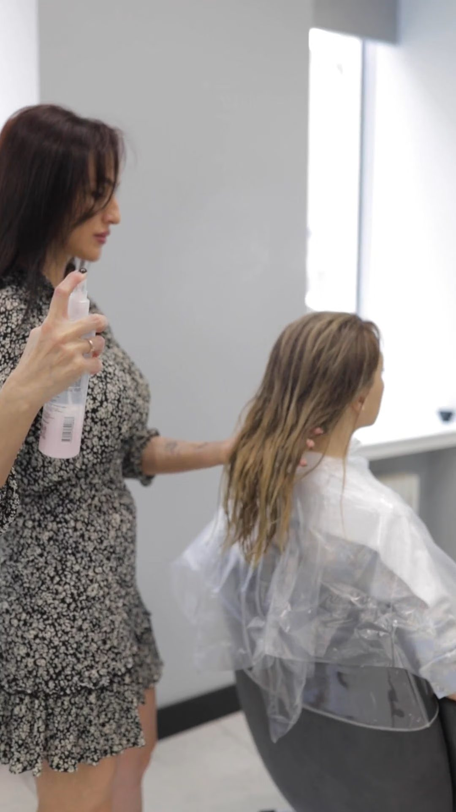

Transplante e saúde capilar · Vieiralves
O Mais Cabello, no Vieiralves, é uma clínica de transplante e saúde capilar. A avaliação inicial é gratuita — agende pelo WhatsApp.
Serviços
Transplante capilar e terapias para o couro cabeludo.
Procedimento com fios do próprio paciente, após avaliação.
Transplante para preencher falhas na barba e nas sobrancelhas.
Vitta Hair, Spa Hair e Photo Hair para o cuidado dos fios.
Protocolo voltado à saúde do couro cabeludo.
Galeria



Sobre
O Mais Cabello atende na Rua Rio Javari, 684, no Vieiralves, com foco em transplante capilar e na saúde do couro cabeludo. A unidade faz parte de uma rede nacional.
Agende sua avaliação gratuita pelo WhatsApp e entenda o que é indicado para o seu caso.
Contato